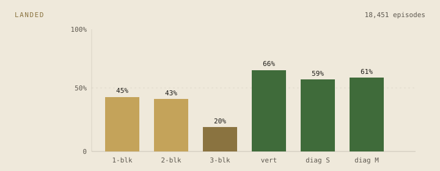
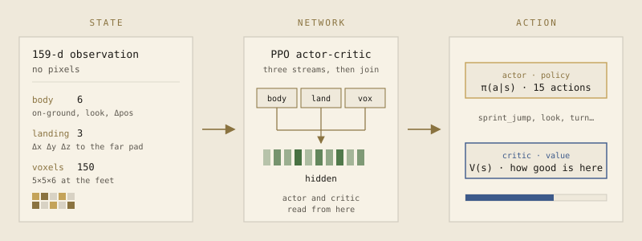

Parkour
Sprint-jump across gaps of increasing size and geometry. The agent learns from a compact state vector — no pixels, no demos required.
Forward pass
Left: a third-person clip (drop site/media/parkour.webm when you have one). Right: a PPO step on simple_jump — voxels at the feet, three-stream net, then π(a|s). Pause and scrub the replay.
Drop site/media/parkour.webm here.
Third person, HUD off. Replay on the right keeps running either way.
Curriculum
The policy only ever trained on a single jump per episode. An adaptive scheduler promotes it when the landing rate holds — one-block, two-block, diagonal, vertical, then three-block. We then drop that same checkpoint on multi_jump_course: four jumps chained, no reset, a layout it never saw in training.
Drop site/media/parkour-course.webm here — the one-shot course clear.
- 1-block
- 2-block
- diagonal
- vertical
- 3-block
- chained course
Trained on isolated gaps. The clip is a zero-shot run of 1-block, 2-block, diagonal, then a vertical — one episode, no intervening reset.
Adaptive curriculum ran 11,628 episodes, then a mixed-maintenance sampler kept all six gaps in rotation through episode 18,451. Three-block stayed the hard one (20% land); vertical and the diagonals sat around 60%. Rolling success across the mix finished near 60% — enough for the chained course to come together.

| Gap | Episodes | Landed | Reward | Steps |
|---|---|---|---|---|
| One-block | 2,467 | 44.7% | 3.67 | 12.1 |
| Two-block | 4,036 | 42.9% | 3.75 | 10.0 |
| Three-block | 7,045 | 20.1% | 0.99 | 9.4 |
| Vertical small | 1,912 | 66.4% | 6.84 | 9.6 |
| Diagonal small | 2,165 | 58.8% | 5.27 | 9.8 |
| Diagonal medium | 826 | 60.5% | 6.15 | 11.5 |
Architecture
The agent never sees pixels. PPO trains an actor-critic on a 159-number state: body, landing offset, and a 5×5×6 occupancy grid at the feet.

Full lab notes: parkour report. Live dashboard: python malmo/rl/visualization/live_viz.py --env simple_jump --checkpoint … --mock.